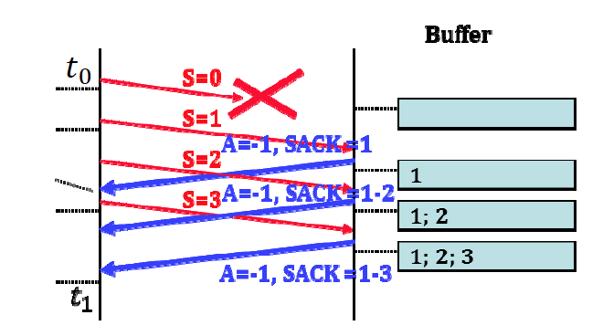
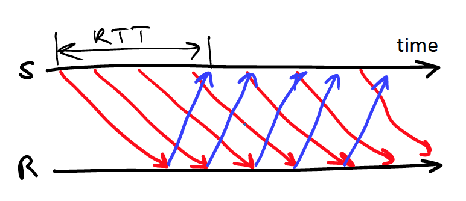
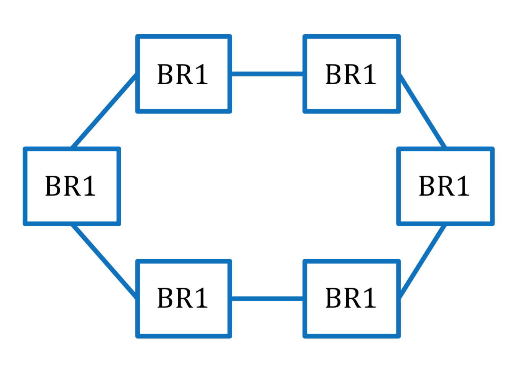

Bart, who is EPFL student, connects his PC to EPFL WiFi, which uses per user access control, authentication and encryption. Bart configures his PC to be a bridge between Ethernet and WiFi and allows Lisa, who is not allowed to access EPFL, to connect to his Ethernet port. Will Lisa be able to connect to the Internet in this way ?
[ ] Yes, provided that Lisa can configure an IP address on the
same subnet as Bart
[ ] Yes, it will work in all cases
[ ] No, it will not work in any case
Bart, who is EPFL student, connects his PC to EPFL WiFi, which uses per user access control, authentication and encryption. Bart configures his PC to be a NAT between Ethernet and WiFi and allows Lisa, who is not allowed to access EPFL, to connect to his Ethernet port. Will Lisa be able to connect to the Internet in this way ?
[ ] Yes if Bart himself is not behind a NAT
[ ] Yes
[ ] No, it will not work in any case
[ ] I don’t know
Lisa’s browser sends DNS query to DNS server, over UDP. What happens if query or answer is lost ?
[ ] Name resolver in browser waits for timeout, if no answer received before timeout, sends again
[ ] Messages cannot be lost because UDP assures message integrity
[ ] UDP detects the loss and retransmits
A time t1 the sender …
Window size = 4 kbytes, one packet = 1 kbytes
q14
[ ] … can send packet 4
[ ] … cannot send packet 4
[ ] It depends on whether data was consumed by application
In the absence of loss, and on a link with capacity packets persecond, the window size required for sending at the maximum possible rate is…
q15
[ ] \(W_{min} = RTT * c\)
[ ] \(W_{min} = \frac{c}{RTT}\)
[ ] \(W_{min} = \frac{RTT}{c}\)
[ ] None of the above
For which types of apps is the streaming service a drawback ?
[ ] an app using http/1 with one TCP connection per object transfer
[ ] an app using http/2 with one TCP connection
[ ] a real time streaming application that sends one new packet every msec
[ ] A and B
[ ] A and C
[ ] B and C
[ ] All
[ ] None
A TCP server is, by definition …
[ ] … an application program that does listen( ) and accept( ) on a TCP socket
[ ] … an application program that does receive( ) on a TCP socket
[ ] … an application program that does send( ) on a TCP socket
When does Fast Retransmit Fail ?
[ ] Extremely rarely, it is quasioptimal
[ ] It fails to detect the loss extremely rarely, but it may often take a long time to detect.
[ ] When one of the last segments of an application layer block is lost, fast retransmit does not detect it.
[ ] It may often fail due to packet packet reordering
If the ACK (3) is never sent, a server that does not implement SYN cookies will1) retransmit SYN ACK2) keep state information until timeout occurs
[ ] 1
[ ] 2
[ ] 1 & 2
[ ] None
With SYN cookies, the response time of SYN-ACK is…
[ ] Larger than without SYN cookies
[ ] Smaller than without SYN cookies
[ ] The same
A web server does accept() on a TCP socket bound to port 80.
[ ] A new socket is created by accept(), bound to an ephemeral port allocated by the operating system.
[ ] A new socket is created by accept(), also bound to port 80.
[ ] No new socket is created but the socket is bound to a second, ephemeral, port allocated by the operating system.
[ ] No new socket is created since the server is listening to a single port (port 80).
An IPv4 host must send IGMP join(m), where m is an IPv4 multicast address …
[ ] in order to receive packets sent to m or to send packets to m.
[ ] before receiving packets sent to m but this is not required for sending to m.
[ ] neither to receive packets sent to m nor to send packets to m.
[ ] before sending packets to m but this is not required for receiving packets sent to m.
In the Internet, which layers other than the application layer may, in some cases, perform re-transmission when a packet loss occurs ?
[ ] The transport layer (TCP) and some instances of the MAC layer.
[ ] The transport layer (TCP) and IPv4 when fragmentation occurs.
[ ] The transport layer (TCP) and IP (v4 or v6) when fragmentation occurs.
[ ] The transport layer (TCP) and IPv6 when fragmentation occurs.
An application at A sends one block of 1900 bytes of data to B using TCP or UDP. An application at B attempts to receive the data and does a successful recvfrom() on a socket. Can B be sure to have received all of the 1900 bytes of the message sent by A ?
[ ] no in either case.
[ ] yes with UDP, no with TCP.
[ ] yes in both cases.
[ ] no with UDP, yes with TCP.
A and B use a fixed sliding window protocol. The window size is 300 bytes. At time t0, the protocol is initialized. Say which of the choices below is allowed for A at time t1:
q16
[ ] A may transmit a packet with Seq = 301:501.
[ ] A may transmit a packet with Seq = 301:401.
[ ] A may transmit a packet with Seq = 301:601.
[ ] A may not transmit any new data.
A TCP sender A detects that the segments 101:201 and 201:301 were lost. The window size is very large and has remained the same as when the segments 101:201 and 201:301 were first sent. When A decides to retransmit these two segments
[ ] A must retransmit 2 segments, with sequence numbers 101:201 and 201:301.
[ ] A may retransmit 1 segment with sequence number 101:201 and must wait for the acknowledgement of this segment before retransmitting 201:301.
[ ] A may retransmit 2 segments, with sequence numbers 101:201 and 201:301 or retransmit one segment with sequence numbers 101:301.
[ ] A may retransmit 1 segment with sequence number 201:301 and must wait for the acknowledgement of this segment before retransmitting 101:201.
Elaine has a computer network with a NAT and a bridge; her equipment is IPv4 only. Now Elaine wants to migrate to IPv6. She does not use multicast. Which of her networking equipments does she need to upgrade ?
[ ] the NAT and not the bridge.
[ ] both the NAT and the bridge.
[ ] neither the NAT nor the bridge.
[ ] the bridge and not the NAT.
With TCP, the window size…
[ ] is dynamic, indicated to the receiver by the source and may differ for each side of the connection.
[ ] is fixed and equal to 64K bytes (= 65536 bytes) by default.
[ ] is dynamic, indicated to the client by the server and is the same for both sides of the connection.
[ ] is dynamic with TCPv4 and static with TCPv6.
An intermediate system X, which is a bridge or a router, forwards a packet that is made of an Ethernet frame containing an IPv4 packet. In which case does X modify the MAC destination address ?
[ ] When X is a router but not when X is a bridge.
[ ] Neither when X is a bridge nor when it is a router.
[ ] When X is a bridge but not when X is a router.
[ ] When X is a bridge and when X is a router.
An IPv6 host connected to Ethernet has to send an IPv6 packet to an IPv6 multicast destination address A. In order to determine the destination MAC address M to be used when sending this packet in an Ethernet frame, the host will…
[ ] send a Neighbour Solicitation message to all nodes in the subnetwork.
[ ] send a Neighbour Solicitation message multicast to all nodes in the subnetwork that have one IPv6 address with the same 32 low order bits as those of A.
[ ] send a Neighbour Solicitation message to the IPv6 multicast address A using a MAC layer broadcast.
[ ] deterministically compute M from A.
The sockets used by a TCP server to receive a SYN packet and to receive data after connection establishment …
[ ] are one and the same.
[ ] are a single socket bound to two different local ports.
[ ] are distinct and bound to different local ports.
[ ] are distinct, but are bound to the same local port.
A sends one block of 2’000 bytes to B in one single socket call. B issues one single socket call in order to receive the data. This socket call is successful (i.e. the call returns and B receives some data). Can B be sure to have received all of the 2’000 bytes sent by A ?
[ ] Yes, regardless of whether the application uses UDP or TCP.
[ ] No, regardless of whether the application uses UDP or TCP.
[ ] Yes if the application uses UDP, no if it uses TCP.
[ ] Yes if the application uses TCP, no if it uses UDP.
A sends data to B using a sliding window protocol over a link of infinite (i.e. very large) bit rate. The achieved throughput …
[ ] is proportional to the window size and inversely proportional to the round trip time.
[ ] is inversely proportional to the round trip time but does not depend on the window size.
[ ] is proportional to the window size but does not depend on the round trip time.
[ ] is independent of window size and round trip time.
An IPv4 host connected to Ethernet has to send an IP packet to a multicast destination address. In order to determine the MAC destination address, the host will…
[ ] send an ARP request and the MAC destination address of the ARP request is deterministically computed from the destination IP address.
[ ] send an ARP request and the MAC destination address of the ARP request is the MAC address of the default router.send an ARP request and the MAC destination address of the ARP request is the MAC address of the default router.
[ ] compute the destination MAC address deterministically from the destination IP address.
[ ] send an ARP request and the MAC destination address of the ARP request is the MAC broadcast address.
A sends data to B using a sliding window protocol. The window size is 5’000 bytes. A has 7 packets ready to send, of size 1’000 bytes each. A sends the first 5 packets to B, then waits. Later, at time t1, A receives from B a selective acknowledgement, which acknowledges the reception of all packets except the second one. What is possible for A immediately after time t1 ?
[ ] A can send neither the sixth nor the seventh packet.
[ ] A can send the seventh packet but not the sixth.
[ ] A can send the sixth and the seventh packets.
[ ] A can send the sixth packet but not the seventh.
Over a lossy channel with several intermediate hops, which method of retransmission (hop-by-hop versus end-to-end) provides a higher throughput ?
[ ] End-to-end.
[ ] Hop-by-hop.
[ ] Both provide the same throughput.
[ ] It depends on the bandwidth-delay product.
A bridge receives an Ethernet packet on port eth0 with destination MAC address equal to ?ff:ff:ff:ff:ff:ff.
[ ] The bridge forwards this packet to all ports that are on the spanning tree except to eth0.
[ ] Such packets are never forwarded by bridges.
[ ] The bridge forwards this packet to all ports except to eth0.
[ ] The bridge forwards this packet to all ports that are not on the spanning tree except to eth0.
An instance of TCP declares that two consecutive segments are lost. The concatenation of the two segments is smaller than the maximum segment size. May TCP merge the two segments and retransmit them as a single segment ?
[ ] No.
[ ] Yes with IPv4, no with IPv6.
[ ] Yes.
[ ] No with IPv4, yes with IPv6.
When a bridge forwards an Ethernet frame …
[ ] it does not modify the MAC header.
[ ] it decrements the TTL/HL fields both in the IP header and in the Ethernet header.
[ ] it decrements the TTL/HL field in the Ethernet header
[ ] it decrements the TTL/HL field in the IP header.
A and B are in different VLANs but they are connected to the same VLAN switch. A sends a packet to B. The MAC destination address, observed at A, is …
[ ] the MAC address of A’s default router.
[ ] a MAC address algorithmically derived from the concatenation of B’s MAC address and VLAN label.
[ ] a MAC address
[ ] the MAC address of B.
How many successful MAC frame transmissions can take place at the same time in this network ?
q17
[ ] 1
[ ] 2
[ ] 3
[ ] 4
[ ] 5
[ ] 6
[ ] \(\ge\) 7
M1 Sends one packet to M4 and one packet to M5. Which source MAC address do the destinations see ?
q18
[ ] Both M4 and M5 see M1 as source MAC address
[ ] M4 sees a MAC address ≠M1 and M5 sees M1
[ ] M4 and M5 both see a MAC address ≠M1
[ ] It depends on the type of switch (transparent or not)
Say which one is true
[ ] There is no TTL in Ethernet headers
[ ] There is a TTL in Ethernet headers, but it is used only in networks with bridges
[ ] There is a TTL in Ethernet headers, and it is used in networks with bridges or hubs
[ ] There is a TTL in Ethernet headers, but it is used only in broadcast frames
On a half-duplex Ethernet link, the protocol is …
[ ] CSMA/CD
[ ] Aloha
[ ] Zigbee
[ ] There is no protocol
How does a bridge build its forwarding table ?
[ ] By means of the spanning tree protocol
[ ] By means of a routing protocol
[ ] By reading MAC source addresses
[ ] There is no forwarding table in a bridge
Lisa has 6 bridges and connects them with Ethernet full duplex links as illustrated. Say which is true.
q19
[ ] This bridged network does not work because it has a loop
[ ] This bridged network does not work because all links are full duplex
[ ] The spanning tree protocol will disable one of the ports of one of the bridges
[ ] The spanning tree protocol will disable one of the bridges
An application at A sends one message to B using either UDP or TCP. An application at B attempts to receive the data sent by A by doing a receive call on a socket. The receive call succeeds and B gets one block of data. Can the application at B be sure to have received the entire message ?
[ ] Yes if UDP is used, no if TCP is used
[ ] No if UDP is used, yes if TCP is used
[ ] Yes in either case
[ ] No in either case
With TCP, the window size …
[ ] Is fixed and equal to 4096 bytes (by default)
[ ] Is dynamic and is given to the source by the receiver
[ ] Is dynamic, is given to the source by the receiver and can only decrease during a connection
[ ] I don’t know
A and B use a fixed sliding window of size 300 Bytes. At time ùíïùüé , the protocol is initialized. At time ùíïùüè ‚Ä¶
q20
[ ] A can send a packet with Seq =401:501 but not more
[ ] A can send a packet with Seq =401:601 but not more
[ ] A can send a packet with Seq =401:701 but not more
[ ] A cannot send any of the above
A and B use TCP, the window size is 300 Bytes. At time ùíïùüé , the protocol is initialized. At time ùíïùüè , A decides to retransmit the missing data. Say what A is ùë° Seq =201:301 Seq =301:401 ùë°+ A Seq=1:101 B Seq =101:201 allowed to do.
A may send a packet with Seq =101:201, followed by a packet with Seq =201:301, and a packet with Seq =301:401
A may send a single packet with Seq =101:401
[ ] 1 is allowed but not 2
[ ] 2 is allowed but not 1
[ ] 1 and 2 are allowed
[ ] None of these is allowed
When a NAT receives a packet from the WAN interface (= from the public internet), it modifies …
[ ] The IP source address
[ ] The IP destination address
[ ] Both
[ ] None
An IPv6 router receives an IPv6 packetwith Hop Limit = 255 …
[ ] The originator of the IPv6 packet must be on-link with this router
[ ] The originator of the IPv6 packet must be at most 254 hops away from this router
[ ] The originator of the IPv6 packet must be at most 255 hops away from this router
[ ] The originator of the IPv6 packet must be at most 256 hops away from this router
Say what is true
A bridge is an intermediatesystem of the MAC layer
A repeater is an intermediatesystem of the Physical layer
[ ] 1
[ ] 2
[ ] 1and2
[ ] None
How many frames can be transmitted in parallel in this network ?
q21
[ ] 1
[ ] 2
[ ] 8
[ ] 9
[ ] ≥10
On a full duplex-Ethernet cable, the protocol is …
[ ] CSMA/CD
[ ] CSMA/CA
[ ] Aloha
[ ] None of the above
When a bridge receives a MAC frame with destination address ff:ff:ff:ff:ff:ff …
[ ] This is an incorrect destination address, the bridge discards the frame
[ ] The bridge forwards the frame on all of its ports
[ ] The bridge forwards the frame on all of its ports that are on the spanning tree
[ ] The bridge does not forward the frame because broadcast frames are never forwarded
[ ] In the Ethernet header, the hop limit field is called TTL and its maximum value is 255
[ ] In the Ethernet header, the hop limit field is called TTL and its maximum value is 63
[ ] In the Ethernet header, the hop limit field is called HL
[ ] There is no hop limit field in Ethernet header
A bridge receives a MAC frame with destination address A (a valid unicast MAC address). The bridge does not have any entry corresponding to A in its forwarding table.
[ ] The bridge silently drops the frame
[ ] The bridge drops the frame and sends an ICMP message “Host unreachable” back to the source.
[ ] The bridge forwards the frame on all of its ports
[ ] The bridge forwards the frame on all of its ports that are on the spanning tree
We have an existing IPv4 local area network with one NAT, one Bridge and one Ethernet hub. We want to upgrade to IPv6. We don’t do multicast. We need to upgrade:
[ ] The NAT
[ ] The bridge
[ ] The hub
[ ] The NAT and the bridge
[ ] The NAT and the hub
[ ] The bridge and the hub
[ ] All
[ ] None
Bartsendsone packet to Lisa. In which of the following cases is the source MAC address in the packet received by Lisa equal to M1 (i.e. to Bart’c PC MAC address) ?